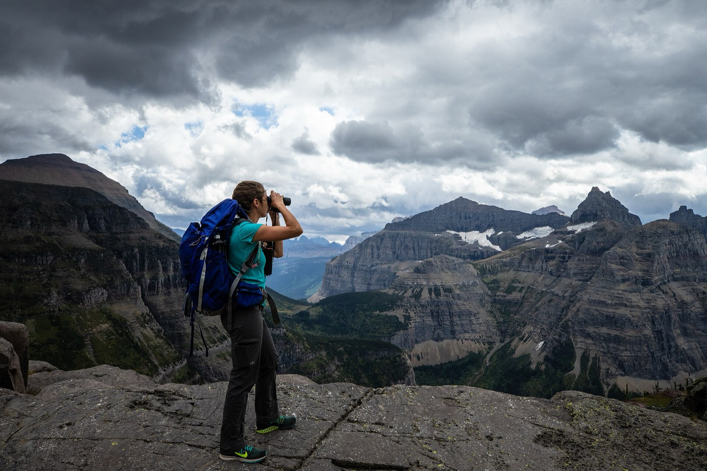
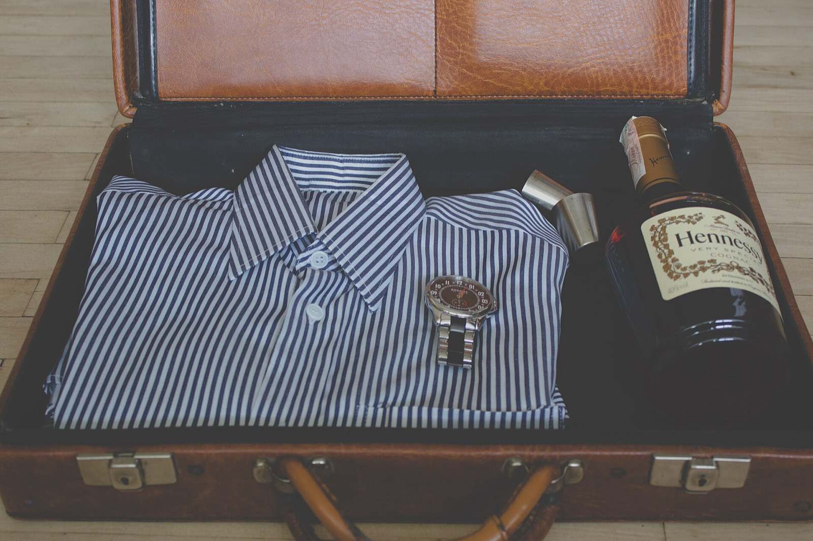

10 jours, 1 sac, zéro regret

Le test qui te dit en 3 minutes si ton sac est le bon, avant d'arriver à l'aéroport.
Dix jours tiennent dans quarante litres.
À une condition : t'interdire le « au cas où ». Un sac plein se porte une heure ; un sac trop grand se remplit tout seul.
Le volume se décide avant de poser quoi que ce soit sur le lit : choisis le sac d'abord, remplis-le ensuite, jamais l'inverse.
À savoir. Contenu d'exemple : les chiffres sont indicatifs.
40 L
de quoi tenir dix jours si tu choisis ce qui entre.
Le poids à vide compte autant que le contenu : une valise rigide pèse déjà près de trois fois un sac cabine, avant d'avoir mis la moindre chaussette.
| Sac | Vide | Plein |
|---|---|---|
| Cabine | 1,1 kg | 8 kg |
| Sac à dos 40 L | 1,4 kg | 11 kg |
| Valise rigide | 3,2 kg | 18 kg |
Retiens surtout l'écart entre vide et plein : c'est lui que ton dos sentira.


Au jour 1, dans le hall de départs, ton sac te paraît léger. Au jour 6, sur le sentier, chaque kilo se compte.
C'est le même sac. Ce qui a changé, c'est le temps que tu passes à le porter.
Au jour 6, chaque kilo se compte.
Trois erreurs qu'on refait à chaque départ.

Trop de chaussures
Deux paires suffisent : celle qui marche, celle qui se montre.
Pas de poche accessible
Passeport et chargeur doivent se prendre sans tout ouvrir.
Le sac neuf le jour J
Un sac se règle avant, pas dans la file d'embarquement.
Elles ont toutes la même cause : on prépare son sac comme pour le premier jour.
Le test
Quelle est la bonne règle ?
Contenu d'exemple. Photos libres de droits :
Clothes-travel-voyage-backpack — www.Pixel.la Free Stock Photos — CC0
Mountain hiker (Unsplash) — Sujitkun Khantayana parkkun — CC0
Packing for a business trip (Unsplash) — Angelina Litvin — CC0
Vilnius airport departures hall — Sdkb — CC BY-SA 4.0
Hiker in the Mountains — GlacierNPS — Public domain